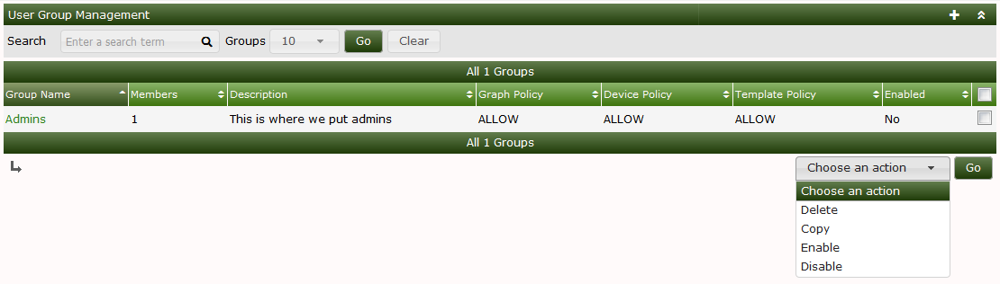
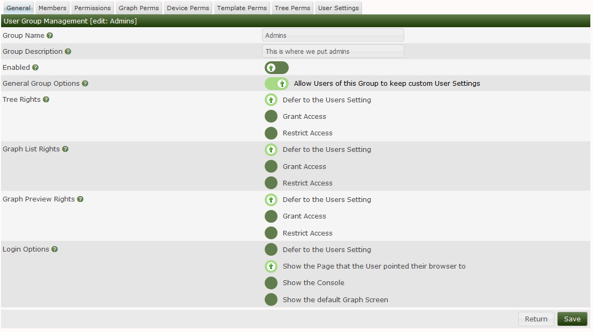
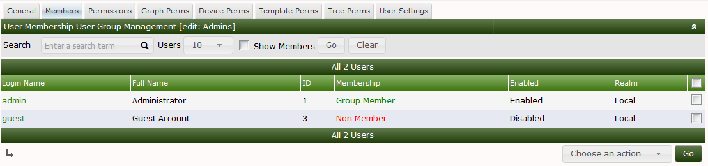
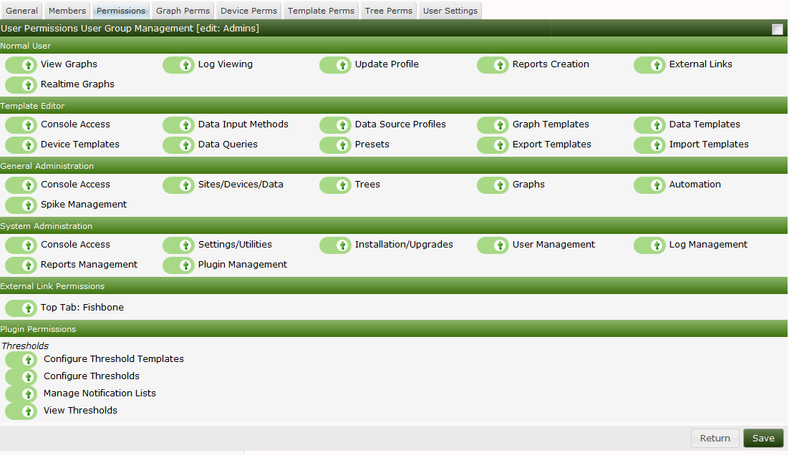
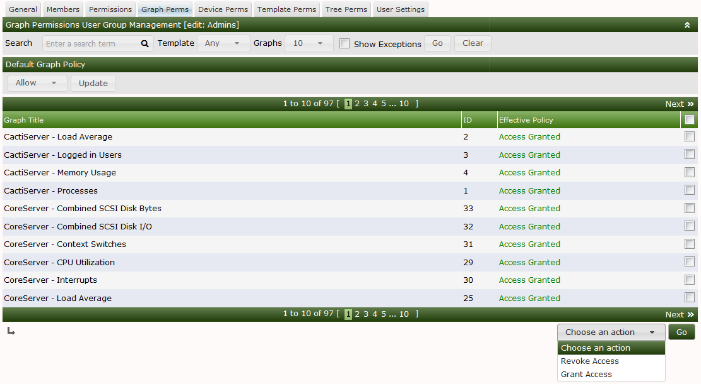

Cacti supports from one to many static User Groups in the current design. User Groups closely mimic the normal user. You see things like Graph permissions, Roles and Realms, Default pages, and settings, it's all there.
The way that a Cacti User Group works is that it's combined with the Users permission, and then the resulting permission is the most permissive. So, if a User does not have a permission, but the User Group that they belong to does, the user then gains the permission.
There are other types of settings that the User Group can own the permission as well. There are only a few of these permissions however.
In the next series of images, we will walk through the User Group interface. In this first images, we can see the main User Group interface. From here, you can see all of the Groups defined on the system and the number of Users in the Group, if the User Group is enabled or disabled. Lastly, in the Action drop-down, you can see the actions that you can take with a User Group.

In this next image, you can see the User Group Edit page. The Edit page has multiple Sub-tabs. They include:
The first form elements are pretty self explanitory. The Tree, Graph List, and Preview rights speak to Cacti three Graph Viewing modes which are explained in the Viewing Graphs section of the Document.
Lastly Login options, are how the user should be re-directed after logging. This is again, pretty self explanitory.

The next image shows the Member list. This one is pretty self explanitory. You can see all the users defined on the system and whether or not they below to the User Group, and the ability to add or remove them enmass.

The next image shows Cacti's Roles and Realms within those Roles. Cacti organizes it's Authorization Realms into Pre-defined Roles. Plugin Developers can create their own Roles as well. So, when you Extend Cacti using Plugins, you may find additional Roles.

In this last image on the page, you can see every Graph in the Cacti system and whether or not the User Group has permission to view it. This permission can granted by giving the Group permission to a Device or the Graph Template in the Permissive permission mode, or in the Restrictive permission mode, they have to have both Device and Graph Template permissions to gain access to the Graph. Finally, the Cacti Administrator can grant access to Graphs one at a time if they choose.

You can find the Permission and Restrictive permission setting on Cactis configuration page at Console > Configuration > Settings > General. We have not covered the Device, Template, Tree or Settings sub-tabs here. If you would like more information on them, see the User documentation.
Copyright (c) 2004-2024 The Cacti Group